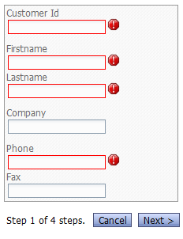

Genie-Style Dialog Example
For this example, we obtained the fields from the customer DBF table in Alphasports. Then we divided the fields logically into tabs and turned on Genie style for the outer tab control. Finally we added validation rules for the fields we deemed essential.When we run this and try to move to the second page without entering any data, we immediately see validation errors for the first page. Note that only the fields on the first page have been checked at this point: the Genie-style navigator uses a validation callback that only checks the controls on the current page.

If this same page were displayed on a narrow display, such as a smart phone, the fields would automatically adjust themselves.

If we needed to accommodate an even narrower screen, we could adjust the Progress indicator template to say "1 of 4" instead of "Step 1 of 4 steps."
Once we get to the last page, the progress indicator shows a Submit button instead of a Next button.
Therefore, the Submit-Reset buttons in the Dialog can be omitted for a Genie-style dialog.
The afterDialogValidate code for a Genie-style dialog is no different from the afterDialogValidate code for a standard dialog.